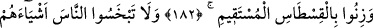

EYKE HALKI
176. Eyke halkı da peygamberleri yalancılıkla suçladı.
177. Şuayb onlara şöyle demişti: (Allah’a karşı gelmekten) sakınmaz mısınız?
178. Bilin ki, ben size gönderilmiş güvenilir bir elçiyim.
179. Artık Allah’a karşı gelmekten sakının ve bana itaat edin.
180. Buna karşı sizden hiçbir ücret istemiyorum. Benim ücretimi verecek olan,
ancak âlemlerin Rabbidir.
181. Ölçüyü tastamam yapın, (insanların hakkını) eksik verenlerden olmayın.
182. Doğru terazi ile tartın.
183. İnsanların hakkı olan şeyleri kısmayın. Yeryüzünde bozgunculuk yaparak
karışıklık çıkarmayın.
184. Sizi ve önceki nesilleri yaratan (Allah)dan korkun.
185. Onlar şöyle dediler: Sen, olsa olsa iyice büyülenmiş birisin!
186. Sen de, ancak bizim gibi bir beşersin. Bil ki, biz seni ancak yalancılardan biri
sayıyoruz.
187. Şâyet doğru sözlülerden isen, üstümüze gökten azap yağdır.
188. Şuayb: “Rabbim yaptıklarınızı en iyi bilendir.” dedi.
189. Velhasıl onu yalancı saydılar da, kendilerini o gölge gününün azâbı
yakalayıverdi. Gerçekten o, muazzam bir günün azâbı idi!